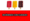

De: La Frikipedia, la enciclopedia extremadamente seria.
De: La Frikipedia, la enciclopedia extremadamente seria. De: La Frikipedia, la enciclopedia extremadamente seria.


«No siento la presión, no me afecta»
~ Lewis Hamilton antes de engancharse en la puzolana
«Nuestro mayor rival era Alonso... ¿No?»
~ Ron Dennis por si quedaban dudas de la igualdad en McGuarren...
Fue disputado el 7 de octubre en el circuito internacional de Shanghai, y ha quedado en la historia como el GP de San Ganchao en la puzolana 2007. Era la 16ª y penúltima carrera de la temporada 2007.
Kimi Räikkönen marcó los mejores tiempos en la Q1 y la Q2, pero la pole fue para Jaimito. Raikkojonen se clasificó segundo, Felipe Farsa fue 3º y Alonso, con problemas con los neumáticos, fue cuarto. Sebastian Vettel fue sancionado con cinco puestos menos en la parrilla de salida por taponar a Heikki Kovalainen.
La carrera empezó con PutoAmo Alonso adelantando a Massita, pero este pudo devolverle la jugada poco después. Luisito iba folladísimo toda la carrera debido al "cariño" que le dispensaban desde el equipo por radio viéndose campeones, por lo que se acabó cargando los neumáticos y al entrar en boxes se salió y se quedó atascado en la grava, en colaboración de San Ganchao. Fue el primer abandono del inglés en la Fórmula 1. Alonso pudo lijarse pasar finalmente a Farsa [1]. Robert Kubica, que iba primero, abandonó y le regaló la carrera a Kimi Räikköñen. Alonso fue segundo y Farsa tercero. Destacar también la potra que tuvieron los siguientes pilotos: el niñato ese, que acabó 4º y consiguió los primeros puntos de la temporada para Torito Bravo; su compañero Vitantonto Liuzzi, que fue sexto; y El botón izquierdo, que acabó quinto.
| Pos | Nº | Piloto | Equipo | Vueltas | Tiempo/retirado | Pos. parrilla | Puntos |
|---|---|---|---|---|---|---|---|
| 1 | 6 | |
|
56 | 1:37:58.395 | 2 | 10 |
| 2 | 1 | |
|
56 | +9,8 s | 4 | 8 |
| 3 | 5 | |
|
56 | +12,8 s | 3 | 6 |
| 4 | 19 | Niñato orejudo | |
56 | +53,5 s | 17 | 5 |
| 5 | 7 | |
Honda | 56 | +68,6 s | 10 | 4 |
| 6 | 18 | |
|
56 | +73,6 s | 11 | 3 |
| 7 | 9 | El peludo | BMW Sauber | 56 | +74,2 s | 8 | 2 |
| 8 | 14 | |
|
56 | +80,7 s | 5 | 1 |
| 9 | 4 | |
|
56 | +81,1 s | 13 | |
| 10 | 15 | |
|
56 | +84,6 s | 7 | |
| 11 | 3 | |
|
56 | +86,6 s | 18 | |
| 12 | 17 | |
|
55 | +1 vuelta | 19 | |
| 13 | 12 | |
Tontoyota | 55 | +1 vuelta | 12 | |
| 14 | 22 | El sufridor | Super Aguri Honda | 55 | +1 vuelta | 20 | |
| 15 | 8 | |
Honda | 55 | +1 vuelta | 16 | |
| 16 | 16 | El coquetón | |
54 | +2 vueltas | 15 | |
| 17 | 21 | El masoca | |
53 | +3 vueltas | 22 | |
| Ret | 10 |  Roberto Cúbico | BMW Sauber | 33 | Cagada hidráulica | 9 | |
| Ret | 2 | |
|
30 | Sanganchó en la puzolana | 1 | |
| Ret | 11 | Ralfredo el liante | Toyota | 25 | Trompo de gilipollas | 6 | |
| Ret | 20 | Estorbo humano | |
24 | Hostión | 21 | |
| Ret | 23 | |
Super Yoguri Honda | 11 | Se le jodieron los frenos | 14 |
Autor(es):